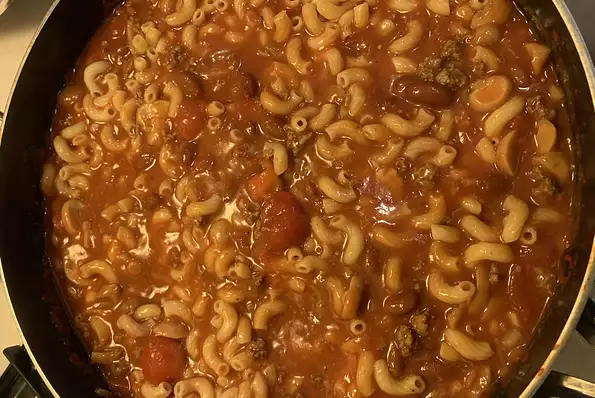

Chilli-mac

t's a wonderful, 'stick-to-the-ribs' meal that goes wonderful with warm cornbread or rolls. I find that kids love this when they don't like regular 'spicy' chili. Enjoy!
Ingredients
- 2 cup elbow macroni
- 2 pound ground beef
- 2 small onion
- 2 cup celery
- 1 green bell pepper
- 4 cans tomato soup
- 4 cans diced tomatoes
- salt and pepper
Steps
- Cook the pasta for 8-9 minutes in boiling salt water
- Drain the pasta
- In sauce pan, add celery and green pepper with water
- Cook gorund beef in medium heat until brown
- Add onion
- Add celery and green pepper
- Stir in kidney beans, condensed tomato soup, diced tomatoes and brown sugar
- Add and stir in macaroni
Return to HomePage